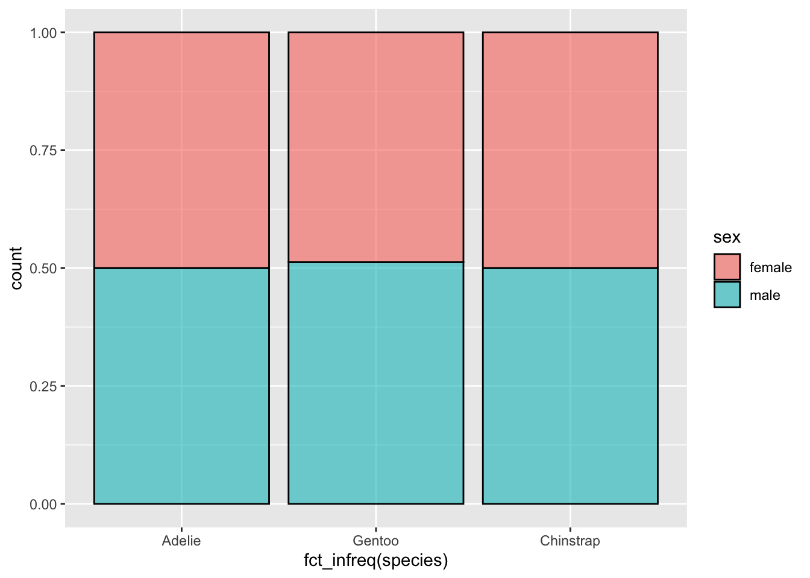
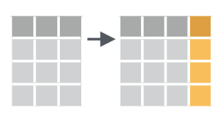
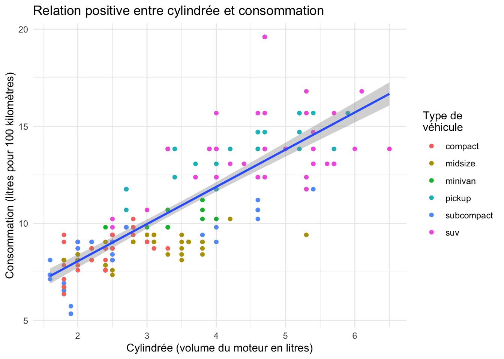

library(tidyverse)
library(palmerpenguins)
library(nycflights13)5.1 Pré-requis
Nous abordons ici une étape essentielle de toute analyse de données : la manipulation de tableaux, la sélection de lignes, de colonnes, la création de nouvelles variables, etc. Bien souvent, les données brutes que nous importons dans R ne sont pas utiles en l’état. Il nous faut parfois sélectionner seulement certaines lignes pour travailler sur une petite partie du jeu de données. Il nous faut parfois modifier des variables existantes (pour modifier les unités par exemple) ou en créer de nouvelles à partir des variables existantes. Nous avons aussi très souvent besoin de constituer des groupes et d’obtenir des statistiques descriptives pour chaque groupe (moyenne, écart-type, erreur type, etc). Nous verrons dans ce chapitre comment faire tout cela grâce au package dplyr qui fournit un cadre cohérent et des fonctions simples permettant d’effectuer tous les tripatouillages de données dont nous pourrons avoir besoin.
Dans ce chapitre, nous aurons besoin des packages suivants :
5.2 Le pipe |>
Avant d’entrer dans le vif du sujet, je souhaite introduire ici la notion de “pipe” (prononcer à l’anglo-saxonne). Le pipe est un opérateur que nous avons déjà vu apparaître à plusieurs reprises dans les chapitres précédents sans expliquer son fonctionnement.
Use native pipe operator est bien cochée dans les préférences de RStudio.Le pipe, noté |>, peut être obtenu en pressant les touches ctrl + shift + M de votre clavier (ou command + shift + M sous macOS). Il peut aussi être noté de la façon suivante : |>. Historiquement, c’est d’ailleurs ce symbole qui était systématiquement utilisé et qui apparaissait en pressant les raccourcis claviers décrits plus haut (voir (figpiperef?) ci-contre). Ce pipe est apparu dans le package magrittr qui fait partie du tidyverse. Cet opérateur s’est avéré tellement utile et a permis de rendre les scripts tellement plus faciles à lire, que depuis la version 4.1.0 de R, un pipe “natif” (|>, disponible par défaut, sans avoir besoin de charger le moindre package) a été rendu disponible.
Il permet d’enchaîner logiquement des actions les unes à la suite des autres. Globalement, le pipe prend l’objet situé à sa gauche, et le transmet à la fonction situé à sa droite. En d’autres termes, les 2 expressions suivantes sont strictement équivalentes :
# Ici, "f" est une fonction quelconque,
# "x" et "y" sont 2 objets dont la fonction a besoin.
# Il s'agit d'un exemple fictif : ne tapez pas ceci dans votre script !
f(x, y)
x |> f(y)Travailler avec le pipe est très intéressant car toutes les fonctions de dplyr que nous allons décrire ensuite sont construites autour de la même syntaxe : on leur fournit un data.frame (ou encore mieux, un tibble), elles effectuent une opération et renvoient un nouveau data.frame (ou un nouveau tibble). Il est ainsi possible de créer des groupes de commandes cohérentes qui permettent, grâce à l’enchaînement d’étapes simples, d’aboutir à des résultats complexes.
De la même façon que le + permet d’ajouter une couche supplémentaire à un graphique ggplot2, le pipe |> permet d’ajouter une opération supplémentaire dans un groupe de commandes.
Pour reprendre un exemple de la Section 3.8.1 sur les diagrammes bâtons empilés, nous avions utilisé ce code :
penguins |>
filter(!is.na(sex)) |>
ggplot(aes(x = fct_infreq(species), fill = sex)) +
geom_bar(alpha = 0.6, color = "black", position = "fill")Ligne par ligne, voilà la signification de ce code :
- “Prend le tableau
penguins, puis…” - “transmets-le à la fonction
filter()pour éliminer les lignes pour lequel le sexe est inconnu, puis…” - “transmets le résultat à la fonction
ggplot()pour en faire un graphique”
On aurait pu faire la même chose ainsi :
penguins_clean <- filter(penguins, !is.na(sex))
ggplot(penguins_clean, aes(x = fct_infreq(species), fill = sex)) +
geom_bar(alpha = 0.6, color = "black", position = "fill")
C’est strictement équivalent. La deuxième méthode à l’inconvénient de nous obliger à créer un objet intermédiaire (que j’ai ici nommé penguins_clean). Lorsque l’on a de nombreuses fonctions à enchaîner, il faut donc créer de nombreux objets intermédiaires dont nous n’avons besoin qu’une seule fois, ce qui peut être source de nombreuses erreurs.
Une troisième façon de procéder est la suivante :
ggplot(filter(penguins, !is.na(sex)),
aes(x = fct_infreq(species), fill = sex)) +
geom_bar(alpha = 0.6, color = "black", position = "fill")
Cette fois, on ne crée plus d’objet intermédiaire, mais on intègre directement la fonction filter() à l’intérieur de la fonction ggplot(). Le code devient un peu moins lisible, et quand ça n’est pas deux fonctions mais 4, 5 ou plus que nous devons enchaîner, procéder ainsi est la garantie que des erreurs seront commises et qu’elles seront très difficiles à corriger.
On préfère donc toujours utiliser le pipe qui a le mérite de placer chaque fonction sur une nouvelle ligne, et de permettre une lecture plus simple du code, ligne par ligne, étape par étape, et non de façon imbriquée, de l’intérieur d’une commande vers l’extérieur :
penguins |>
filter(!is.na(sex)) |>
ggplot(aes(x = fct_infreq(species), fill = sex)) +
geom_bar(alpha = 0.6, color = "black", position = "fill")Notez bien qu’avec le pipe, le premier argument des fonctions filter() et ggplot() a disparu : le pipe a fourni automatiquement à filter() les données du tableau penguins. Il a ensuite fourni automatiquement à ggplot() les données modifiées par la fonction filter().
Comme pour le + de ggplot2, il est conseillé de placer un seul pipe par ligne, toujours à la fin, et de revenir à la ligne pour préciser l’étape suivante.
Toutes les commandes que nous utiliserons à partir de maintenant reposeront sur le pipe puisqu’il permet de rendre le code plus lisible.
5.3 Les verbes du tripatouillage de données
Nous allons ici nous concentrer sur les fonctions les plus couramment utilisées pour manipuler et résumer des données. Nous aborderons ici une dizaine des principaux verbes de la manipulation des données, chacun correspondant à une fonction précise de dplyr. Chaque section de ce chapitre sera consacrée à la présentation d’un exemple utilisant un ou plusieurs de ces verbes.
Les 6 verbes sont :
filter(): choisir des lignes dans un tableau à partir de conditions spécifiques (filtrer).select(): sélectionner des colonnes d’un tableau.mutate(): créer de nouvelles variables en transformant et combinant des variables existantes (muter).arrange(): trier les lignes d’un tableau selon un ou plusieurs critères (arranger).summarise()etreframe(): calculer des résumés statistiques des données (résumer). Souvent utilisé en combinaison avecgroup_by()(grouper par), qui permet de constituer des groupes au sein des données.left_join()etinner_join(): associer, fusionner 2data.frames en faisant correspondre les éléments d’une colonne commune entre les 2 tableaux (joindre). Il y a de nombreuses façons de joindre des tableaux, et donc, de nombreuses fonctions de jointure (left_join(),right_join(),inner_join(),full_join(),outer_join(),cross_join(),nest_join()…). Nous nous contenterons d’examiner les fonctions les plus basiques et qui devraient couvrir l’essentiel de vos besoins.
Toutes ces fonctions, tous ces verbes, sont utilisés de la même façon : on prend un data.frame, grâce au pipe, on le transmet à l’une de ces fonctions dont on précise les arguments entre parenthèses, la fonction nous renvoie un nouveau tableau modifié. Évidemment, on peut enchaîner les actions pour modifier plusieurs fois le même tableau, c’est tout l’intérêt du pipe.
Enfin, gardez en tête qu’il existe beaucoup plus de fonctions dans dplyr que la dizaine que nous allons détailler ici. Nous verrons parfois quelques variantes, mais globalement, maîtriser ces fonctions simples devrait vous permettre de conduire une très large gamme de manipulations de données, et ainsi vous faciliter la vie pour la production de graphiques et l’analyse statistique de vos données.
5.4 Filtrer des lignes avec filter() {?sec-filter}
5.4.1 Principe

filter() tiré de la ‘cheatsheet’ de dplyr et tidyr.Comme son nom l’indique, filter() permet de filtrer des lignes en spécifiant un ou des critères de tri portant sur une ou plusieurs variables. Nous pouvons ainsi créer un nouveau tableau ne contenant que les données de l’espèce Adélie :
peng_adelie <- penguins |>
filter(species == "Adelie")La première ligne de code nous permet :
- d’indiquer le nom du nouvel objet dans lequel les données modifiées seront stockées (ici,
peng_adelie) - d’indiquer de quel objet les données doivent être extraites (
penguins) - de passer cet objet à la fonction suivante avec un pipe
|>
Le premier argument de la fonction filter() doit être le nom d’un data.frame ou d’un tibble. Ici, puisque nous utilisons le pipe, il est inutile de spécifier cet argument : c’est ce qui est placé à gauche du pipe qui est utilisé comme premier argument de la fonction filter(). Les arguments suivants constituent la ou les conditions qui doivent être respectées par les lignes du tableau de départ afin d’être intégrées au nouveau tableau de données.
5.4.2 Exercice
Créez un objet nommé adelie_light qui contiendra uniquement les données de l’espèce Adélie, et uniquement pour les individus pesant 3700 grammes ou moins. Indice : relisez la Section 1.3.4.2
Vérifiez que cet objet contient bien 81 lignes.
5.4.3 Les conditions logiques
Dans la Section 1.3.4.2, nous avons présenté en détail le fonctionnement des opérateurs de comparaison dans R. Relisez cette section si vous ne savez plus de quoi il s’agit. Les opérateurs de comparaison permettent de vérifier l’égalité ou l’inégalité entre des éléments. Ils renvoient TRUE ou FALSE et seront particulièrement utiles pour filtrer des lignes dans un tableau. Voici à nouveau la liste des opérateurs de comparaison usuels :
==: égal à!=: différent de>: supérieur à<: inférieur à>=: supérieur ou égal à<=: inférieur ou égal à
À cette liste, nous pouvons ajouter quelques éléments utiles :
is.na(): renvoieTRUEen cas de données manquantes.!: permet de tester le contraire d’une expression logique. Par exemple!is.na()renvoieTRUEs’il n’y a pas de données manquantes.%in%: permet de tester si l’élément de gauche est contenu dans la série d’éléments fournie à droite. Par exemple2 %in% 1:5renvoieTRUE, mais2 %in% 5:10renvoieFALSE.|: opérateur logiqueOU. Permet de tester qu’une conditionOUune autre est remplie.&: opérateur logiqueET. Permet de tester qu’une conditionETune autre sont remplies.
Voyons comment utiliser ces opérateurs avec la fonction filter().
Dans le tableau penguins, quels sont les individus pour lesquels la masse n’a pas été mesurée ? Une bonne façon de le savoir est de regarder si, pour la variable body_mass_g, des données manquantes sont présentes :
penguins |>
filter(is.na(body_mass_g))# A tibble: 2 × 8
species island bill_length_mm bill_depth_mm flipper_length_mm body_mass_g
<fct> <fct> <dbl> <dbl> <int> <int>
1 Adelie Torgersen NA NA NA NA
2 Gentoo Biscoe NA NA NA NA
# ℹ 2 more variables: sex <fct>, year <int>Seules les lignes contenant NA dans la colonne body_mass_g sont retenues. Il y a donc 2 individus dont la masse est inconnue. D’ailleurs, pour ces individu, aucune mesure biométrique n’est disponible. il s’agit d’un manchot Adélie, et d’un manchot Gentoo, tous les deux de sexe inconnu.
Dans le même ordre d’idée, y a t-il des individus dont on ne connait pas le sexe mais dont on connait les mesures biométriques (au moins la masse) ? Là encore, une façon d’obtenir cette information est de sélectionner les individus dont le sexe est manquant, mais pour lesquels la masse n’est pas manquante :
penguins |>
filter(is.na(sex),
!is.na(body_mass_g))# A tibble: 9 × 8
species island bill_length_mm bill_depth_mm flipper_length_mm body_mass_g
<fct> <fct> <dbl> <dbl> <int> <int>
1 Adelie Torgersen 34.1 18.1 193 3475
2 Adelie Torgersen 42 20.2 190 4250
3 Adelie Torgersen 37.8 17.1 186 3300
4 Adelie Torgersen 37.8 17.3 180 3700
5 Adelie Dream 37.5 18.9 179 2975
6 Gentoo Biscoe 44.5 14.3 216 4100
7 Gentoo Biscoe 46.2 14.4 214 4650
8 Gentoo Biscoe 47.3 13.8 216 4725
9 Gentoo Biscoe 44.5 15.7 217 4875
# ℹ 2 more variables: sex <fct>, year <int>Notez l’utilisation du ! pour la seconde condition. Nous récupérons ici les lignes pour lesquelles body_mass_g n’est pas NA et pour lesquelles sex est NA. Seules les lignes qui respectent cette double condition sont retenues. Cette syntaxe est équivalente à :
penguins |>
filter(is.na(sex) & !is.na(body_mass_g))# A tibble: 9 × 8
species island bill_length_mm bill_depth_mm flipper_length_mm body_mass_g
<fct> <fct> <dbl> <dbl> <int> <int>
1 Adelie Torgersen 34.1 18.1 193 3475
2 Adelie Torgersen 42 20.2 190 4250
3 Adelie Torgersen 37.8 17.1 186 3300
4 Adelie Torgersen 37.8 17.3 180 3700
5 Adelie Dream 37.5 18.9 179 2975
6 Gentoo Biscoe 44.5 14.3 216 4100
7 Gentoo Biscoe 46.2 14.4 214 4650
8 Gentoo Biscoe 47.3 13.8 216 4725
9 Gentoo Biscoe 44.5 15.7 217 4875
# ℹ 2 more variables: sex <fct>, year <int>Dans la fonction filter(), séparer plusieurs conditions par des virgules signifie que seules les lignes qui remplissent toutes les conditions seront retenues. C’est donc l’équivalent du ET logique.
Enfin, pour illustrer l’utilisation de | (le OU logique) et de %in%, imaginons que nous souhaitions extraire les informations des individus de l’espèce Adélie qui vivent soit sur l’île Biscoe, soit sur l’île Dream, et dont le bec mesure moins de 42 mm de longueur :
adel_small <- penguins |>
filter(species == "Adelie",
island == "Biscoe" | island == "Dream",
bill_length_mm < 42)
adel_small# A tibble: 91 × 8
species island bill_length_mm bill_depth_mm flipper_length_mm body_mass_g
<fct> <fct> <dbl> <dbl> <int> <int>
1 Adelie Biscoe 37.8 18.3 174 3400
2 Adelie Biscoe 37.7 18.7 180 3600
3 Adelie Biscoe 35.9 19.2 189 3800
4 Adelie Biscoe 38.2 18.1 185 3950
5 Adelie Biscoe 38.8 17.2 180 3800
6 Adelie Biscoe 35.3 18.9 187 3800
7 Adelie Biscoe 40.6 18.6 183 3550
8 Adelie Biscoe 40.5 17.9 187 3200
9 Adelie Biscoe 37.9 18.6 172 3150
10 Adelie Biscoe 40.5 18.9 180 3950
# ℹ 81 more rows
# ℹ 2 more variables: sex <fct>, year <int>Examinez ce tableau avec View() pour vérifier que la variable island contient bien uniquement les valeurs Biscoe et Dream correspondant aux 2 îles qui nous intéressent. Nous avons extrait ici les individus des îles Biscoe et Dream, pourtant, il nous a fallu utiliser le OU logique. Car chaque individu n’est issu que d’une unique île, or nous souhaitons récupérer toutes les lignes pour lesquelles l’île est soit Biscoe, soit Dream (l’une ou l’autre). Pour chaque ligne, les deux conditions ne peuvent pas être vraies l’une et l’autre en même temps. En revanche, on retient chaque ligne qui remplit la première condition ou la seconde.
Une autre solution pour obtenir le même tableau est de remplacer l’expression contenant | par une expression contenant %in% :
adel_small2 <- penguins |>
filter(species == "Adelie",
island %in% c("Biscoe", "Dream"),
bill_length_mm < 42)
adel_small2# A tibble: 91 × 8
species island bill_length_mm bill_depth_mm flipper_length_mm body_mass_g
<fct> <fct> <dbl> <dbl> <int> <int>
1 Adelie Biscoe 37.8 18.3 174 3400
2 Adelie Biscoe 37.7 18.7 180 3600
3 Adelie Biscoe 35.9 19.2 189 3800
4 Adelie Biscoe 38.2 18.1 185 3950
5 Adelie Biscoe 38.8 17.2 180 3800
6 Adelie Biscoe 35.3 18.9 187 3800
7 Adelie Biscoe 40.6 18.6 183 3550
8 Adelie Biscoe 40.5 17.9 187 3200
9 Adelie Biscoe 37.9 18.6 172 3150
10 Adelie Biscoe 40.5 18.9 180 3950
# ℹ 81 more rows
# ℹ 2 more variables: sex <fct>, year <int>Ici, toutes les lignes du tableau dont la variable island est égale à un élément du vecteur c("Biscoe", "Dream") sont retenues. L’utilisation du OU logique peut être source d’erreur. Je préfère donc utiliser %in% qui me semble plus parlant. La fonction identical() nous confirme que les deux façons de faire produisent exactement le même résultat. Libre à vous de privilégier la méthode qui vous convient le mieux :
identical(adel_small, adel_small2)[1] TRUE5.5 Sélectionner des variables avec select()

select() tiré de la ‘cheatsheet’ de dplyr et tidyr.Il n’est pas rare de travailler avec des tableaux contenant des centaines, voir des milliers de colonnes. Dans de tels cas, il peut être utile de réduire le jeu de données aux variables qui vous intéressent. Le rôle de la fonction select() est de retenir uniquement les colonnes dont on a spécifié le nom, afin de recentrer l’analyse sur les variables utiles.
select() n’est pas particulièrement utile pour le jeu de données penguins puisqu’il ne contient que 8 variables. Toutefois, on peut malgré tout ces données pour comprendre le fonctionnement général de select(). Ainsi, pour sélectionner uniquement les colonnes species, sex et body_mass_g, on tape :
# Sélection de variables par leur nom
penguins |>
select(species, sex, body_mass_g)# A tibble: 344 × 3
species sex body_mass_g
<fct> <fct> <int>
1 Adelie male 3750
2 Adelie female 3800
3 Adelie female 3250
4 Adelie <NA> NA
5 Adelie female 3450
6 Adelie male 3650
7 Adelie female 3625
8 Adelie male 4675
9 Adelie <NA> 3475
10 Adelie <NA> 4250
# ℹ 334 more rowsPour retenir des colonnes qui sont côte à côte dans le tableau de départ, on peut utiliser l’opérateur : pour les sélectionner :
# Sélection de toutes les variables entre `island` et `bill_depth_mm` (inclues)
penguins |>
select(island:bill_depth_mm)# A tibble: 344 × 3
island bill_length_mm bill_depth_mm
<fct> <dbl> <dbl>
1 Torgersen 39.1 18.7
2 Torgersen 39.5 17.4
3 Torgersen 40.3 18
4 Torgersen NA NA
5 Torgersen 36.7 19.3
6 Torgersen 39.3 20.6
7 Torgersen 38.9 17.8
8 Torgersen 39.2 19.6
9 Torgersen 34.1 18.1
10 Torgersen 42 20.2
# ℹ 334 more rowsÀ l’inverse, si on veut supprimer certaines colonnes, on peut utiliser la notation - :
# Sélection de toutes les variables de `penguins` à l'exception
# de celles comprises entre `island` et `bill_depth_mm` (inclues)
penguins |>
select(-(island:bill_depth_mm))# A tibble: 344 × 5
species flipper_length_mm body_mass_g sex year
<fct> <int> <int> <fct> <int>
1 Adelie 181 3750 male 2007
2 Adelie 186 3800 female 2007
3 Adelie 195 3250 female 2007
4 Adelie NA NA <NA> 2007
5 Adelie 193 3450 female 2007
6 Adelie 190 3650 male 2007
7 Adelie 181 3625 female 2007
8 Adelie 195 4675 male 2007
9 Adelie 193 3475 <NA> 2007
10 Adelie 190 4250 <NA> 2007
# ℹ 334 more rowsIl y a beaucoup de fonctions permettant de sélectionner des variables dont les noms respectent certains critères. Par exemple :
starts_with("abc"): renvoie toutes les variables dont les noms commencent par “abc”ends_with("xyz"): renvoie toutes les variables dont les noms se terminent par “xyz”contains("ijk"): renvoie toutes les variables dont les noms contiennent “ijk”
Il en existe beaucoup d’autres. Vous pouvez consulter l’aide de ?select() pour en savoir plus.
Ainsi, il est par exemple possible d’extraire toutes les variables contenant le mot “mm” ainsi :
penguins |>
select(contains("mm"))# A tibble: 344 × 3
bill_length_mm bill_depth_mm flipper_length_mm
<dbl> <dbl> <int>
1 39.1 18.7 181
2 39.5 17.4 186
3 40.3 18 195
4 NA NA NA
5 36.7 19.3 193
6 39.3 20.6 190
7 38.9 17.8 181
8 39.2 19.6 195
9 34.1 18.1 193
10 42 20.2 190
# ℹ 334 more rowsÉvidemment, le tableau penguins n’est pas modifié par cette opération : il contient toujours les 8 variables de départ. Pour travailler avec ces tableaux de données contenant moins de variables, il faut les stocker dans un nouvel objet en leur donnant un nom :
measures <- penguins |>
select(contains("mm"))Enfin, on peut utiliser select() pour renommer des variables. Mais ce n’est que rarement utile car select() élimine toutes les variables qui n’ont pas été explicitement nommées :
penguins |>
select(species:island,
b_length = bill_length_mm,
flipper = flipper_length_mm)# A tibble: 344 × 4
species island b_length flipper
<fct> <fct> <dbl> <int>
1 Adelie Torgersen 39.1 181
2 Adelie Torgersen 39.5 186
3 Adelie Torgersen 40.3 195
4 Adelie Torgersen NA NA
5 Adelie Torgersen 36.7 193
6 Adelie Torgersen 39.3 190
7 Adelie Torgersen 38.9 181
8 Adelie Torgersen 39.2 195
9 Adelie Torgersen 34.1 193
10 Adelie Torgersen 42 190
# ℹ 334 more rowsIl est donc généralement préférable d’utiliser rename() pour renommer certaines variables sans en éliminer aucune :
penguins |>
rename(b_length = bill_length_mm,
flipper = flipper_length_mm)# A tibble: 344 × 8
species island b_length bill_depth_mm flipper body_mass_g sex year
<fct> <fct> <dbl> <dbl> <int> <int> <fct> <int>
1 Adelie Torgersen 39.1 18.7 181 3750 male 2007
2 Adelie Torgersen 39.5 17.4 186 3800 female 2007
3 Adelie Torgersen 40.3 18 195 3250 female 2007
4 Adelie Torgersen NA NA NA NA <NA> 2007
5 Adelie Torgersen 36.7 19.3 193 3450 female 2007
6 Adelie Torgersen 39.3 20.6 190 3650 male 2007
7 Adelie Torgersen 38.9 17.8 181 3625 female 2007
8 Adelie Torgersen 39.2 19.6 195 4675 male 2007
9 Adelie Torgersen 34.1 18.1 193 3475 <NA> 2007
10 Adelie Torgersen 42 20.2 190 4250 <NA> 2007
# ℹ 334 more rows5.6 Créer de nouvelles variables avec mutate()
5.6.1 Principe

mutate() tiré de la ‘cheatsheet’ de dplyr et tidyr.La fonction mutate() permet de créer de nouvelles variables à partir des variables existantes, ou de modifier des variables déjà présentes dans un jeu de données. Il est en effet fréquent d’avoir besoin de calculer de nouvelles variables, souvent plus informatives que les variables disponibles.
Voyons un exemple. À partir de penguins, nous allons calculer une nouvelle variable et en modifier une autre :
ratio: le rapport entre la longueur du bec et son épaisseur. Cela nous donnera un indice de la compacité du bec. Des valeurs faibles de ce ratio indiqueront un bec très trapu, alors que des valeurs fortes indiqueront un bec très effilémass_kg: la masse, qui est ici exprimée en grammes sera transformée en kilogrammes par une simple division par 1000
penguins |>
mutate(ratio = bill_length_mm / bill_depth_mm,
mass_kg = body_mass_g / 1000)# A tibble: 344 × 10
species island bill_length_mm bill_depth_mm flipper_length_mm body_mass_g
<fct> <fct> <dbl> <dbl> <int> <int>
1 Adelie Torgersen 39.1 18.7 181 3750
2 Adelie Torgersen 39.5 17.4 186 3800
3 Adelie Torgersen 40.3 18 195 3250
4 Adelie Torgersen NA NA NA NA
5 Adelie Torgersen 36.7 19.3 193 3450
6 Adelie Torgersen 39.3 20.6 190 3650
7 Adelie Torgersen 38.9 17.8 181 3625
8 Adelie Torgersen 39.2 19.6 195 4675
9 Adelie Torgersen 34.1 18.1 193 3475
10 Adelie Torgersen 42 20.2 190 4250
# ℹ 334 more rows
# ℹ 4 more variables: sex <fct>, year <int>, ratio <dbl>, mass_kg <dbl>Si on ne souhaite conserver que les variables nouvellement créées par mutate() et éliminer toutes les autres, on peut utiliser transmute() :
penguins |>
transmute(ratio = bill_length_mm / bill_depth_mm,
mass_kg = body_mass_g / 1000)# A tibble: 344 × 2
ratio mass_kg
<dbl> <dbl>
1 2.09 3.75
2 2.27 3.8
3 2.24 3.25
4 NA NA
5 1.90 3.45
6 1.91 3.65
7 2.19 3.62
8 2 4.68
9 1.88 3.48
10 2.08 4.25
# ℹ 334 more rowsEt comme toujours, pour pouvoir réutiliser ces données, on leur donne un nom :
pengu_ratio <- penguins |>
transmute(ratio = bill_length_mm / bill_depth_mm,
mass_kg = body_mass_g / 1000)5.6.2 Transformer des variables en facteurs
Il n’est pas rare que les tableaux de données que nous importons contiennent des colonnes numériques ou de chaînes de caractères qui devraient en réalité être reconnues en tant que facteurs. La fonction mutate() nous permet de changer rapidement le type d’une variable afin qu’elle soit reconnue comme un facteur. Plusieurs variables du tableau dauphin, importé plus tôt, devrait être transformées en facteur :
dauphin# A tibble: 93 × 9
ID Sexe Statut Taille Age Cd Cu Hg Organe
<chr> <chr> <chr> <dbl> <dbl> <dbl> <dbl> <dbl> <chr>
1 Numéro 1 f imm 315 3 29.6 3.24 NA rein
2 Numéro 2 f imm 357 4 55.1 4.42 NA rein
3 Numéro 3 f pnl 439 34 129. 5.01 9.02 rein
4 Numéro 4 f imm 316 4 71.2 4.33 NA rein
5 Numéro 5 f l 435 26 192 5.15 NA rein
6 Numéro 6 f pnl 388 6 NA 4.12 4.53 rein
7 Numéro 7 f mat 410 NA 76 5.1 33.9 foie
8 Numéro 8 m imm 355 NA 74.4 4.72 13.3 foie
9 Numéro 9 m imm 222 NA 0.09 9.5 2.89 foie
10 Numéro 10 m imm 412 9 85.6 5.42 NA rein
# ℹ 83 more rowsC’est le cas des variables Sexe, Statut et Organe. Par ailleurs, la variable ID pourrait être supprimée puisqu’elle n’apporte aucune information est est parfaitement redondante avec les numéros de ligne du tableau. Voyons comment réaliser toutes ces actions :
dauphin_clean <- dauphin |>
select(-ID) |> # Suppression de la colonne ID, puis
mutate(Sexe = factor(Sexe), # Transformation de Sexe en facteur
Organe = factor(Organe), # Transformation d'Organe en facteur
Statut = factor(Statut, # Transformation de Statut en facteur
levels = c("imm", "mat", "pnl", "pl", "l", "repos")))L’objet dauphin_clean contient les résultats de nos manipulations :
dauphin_clean# A tibble: 93 × 8
Sexe Statut Taille Age Cd Cu Hg Organe
<fct> <fct> <dbl> <dbl> <dbl> <dbl> <dbl> <fct>
1 f imm 315 3 29.6 3.24 NA rein
2 f imm 357 4 55.1 4.42 NA rein
3 f pnl 439 34 129. 5.01 9.02 rein
4 f imm 316 4 71.2 4.33 NA rein
5 f l 435 26 192 5.15 NA rein
6 f pnl 388 6 NA 4.12 4.53 rein
7 f mat 410 NA 76 5.1 33.9 foie
8 m imm 355 NA 74.4 4.72 13.3 foie
9 m imm 222 NA 0.09 9.5 2.89 foie
10 m imm 412 9 85.6 5.42 NA rein
# ℹ 83 more rowsVous notez que ID a disparu et que les 3 variables modifiées sont maintenant bel et bien des facteurs. Vous avez probablement remarqué également que pour la variable Statut, la syntaxe que j’ai utilisée est légèrement différente de celle des variables Sexe et Organe. Pour en comprendre la raison, tapez ceci pour afficher le contenu de ces facteurs :
dauphin_clean$Sexe [1] f f f f f f f m m m m f m f m f f m f m f f m m f f m f f f m f f m f f m f
[39] m f f m f m f m f f m f m m f f f f f f f f f m f f m f f f f f m m m m f m
[77] f f f m f f f m f m m m m m f f m
Levels: f mdauphin_clean$Organe [1] rein rein rein rein rein rein foie foie foie rein rein rein foie foie foie
[16] foie foie foie foie foie rein rein rein rein rein rein rein rein rein rein
[31] rein rein foie foie foie rein rein rein rein rein rein rein rein foie rein
[46] foie foie rein foie foie foie foie foie rein rein foie foie foie foie foie
[61] foie rein foie foie rein rein rein foie foie foie foie foie foie foie foie
[76] rein rein rein rein rein foie foie rein rein foie foie foie foie foie foie
[91] rein rein rein
Levels: foie reindauphin_clean$Statut [1] imm imm pnl imm l pnl mat imm imm imm imm pnl
[13] imm pl imm pnl imm imm pl imm pnl imm mat imm
[25] pnl l imm l pnl repos mat imm imm imm imm l
[37] imm imm imm pnl pnl imm pl imm imm imm pnl pnl
[49] imm pnl imm imm pnl pnl pl imm pnl pl imm imm
[61] pnl imm pnl imm imm imm pl pnl l pl imm imm
[73] imm mat pl mat pnl imm imm mat l imm imm mat
[85] imm imm imm mat imm imm pl l mat
Levels: imm mat pnl pl l reposPour les 2 premiers facteurs, les niveaux des facteurs (ou modalités) sont classés par ordre alphabétique. Ainsi, pour le facteur Sexe, la catégorie f (femelle) apparaît avant m (mâles) dans la liste des niveaux (Levels: ...). Pour le facteur Organe, la modalité foie apparaît avant la modalité rein. L’ordre des modalités d’un facteur est celui qui sera utilisé par défaut pour ordonner les catégories sur les axes d’un graphique ou dans les légendes. L’ordre alphabétique convient parfaitement pour le Sexe ou l’Organe puisqu’il n’y a pas, pour ces facteurs, d’ordre dans les modalités.
levels(dauphin_clean$Sexe)[1] "f" "m"levels(dauphin_clean$Organe)[1] "foie" "rein"Pour le facteur Statut en revanche, l’ordre importe, car il reflète des stades qui se succèdent logiquement au cours de la vie des individus (et des femelles plus particulièrement). Sur un graphique, on souhaite donc que ces catégories apparaissent dans un ordre bien précis, différent de l’ordre alphabétique. C’est la raison pour laquelle, lorsque l’on crée un facteur avec la fonction factor(), on peut spécifier explicitement un ordre pour les catégories grâce à l’argument levels =. Il suffit ensuite de fournir un vecteur contenant le nom de chaque catégorie, dans l’ordre souhaité.
Il existe de nombreuses façons de ré-ordonner les modalités d’un facteur le long des axes d’un graphique. Voyons un exemple avec la Figure 5.5 :
dauphin_clean |>
ggplot(aes(x = Organe, y = Cu, fill = Sexe)) +
geom_boxplot(notch = TRUE) +
scale_fill_brewer(palette = "Accent") +
theme_bw()Imaginons que je souhaite faire apparaître les concentrations en cuivre dans les reins à gauche, et les concentrations en cuivre dans le foie à droite, et que je souhaite inverser l’ordre des catégories pour les sexes (les mâles avant les femelles). Une première possibilité consiste à modifier l’ordre des catégories de façon explicite lorsque je crée les facteurs Sexe et Organe grâce à l’argument levels de la fonction factor() :
dauphin_clean |>
mutate(Sexe = factor(Sexe, levels = c("m", "f")),
Organe = factor(Organe, levels = c("rein", "foie"))) |>
ggplot(aes(x = Organe, y = Cu, fill = Sexe)) +
geom_boxplot(notch = TRUE) +
scale_fill_brewer(palette = "Accent") +
theme_bw()Remarquez que l’ordre des catégories a changé sur l’axe des abscisses, mais que les couleurs de remplissage ne sont plus associées aux mêmes sexes non plus.
Une autre solution est de faire appel au package forcats (c’est un anagramme de factors) qui est automatiquement chargé en mémoire avec le tidyverse. Ce package contient de nombreuses fonctions permettant de manipuler les facteurs, et toutes commencent par fct_. Par exemple, pour inverser l’ordre des catégories d’un facteur (et donc pour arriver au même résultat que précédemment), on peut utiliser fct_rev() :
dauphin_clean |>
ggplot(aes(x = fct_rev(Organe), y = Cu, fill = fct_rev(Sexe))) +
geom_boxplot(notch = TRUE) +
scale_fill_brewer(palette = "Accent") +
theme_bw()fct_rev()Il conviendrait ici de changer les légendes de l’axe des x et de l’échelle de couleurs avec la fonction labs() (voir ?sec-labels).
Il existe de nombreuses autres fonctions très utiles dans le package forcats. L’une d’entre elles est la fonction fct_recode(), qui permet de changer le nom des modalités d’un facteur. Par exemple :
dauphin |>
mutate(Sexe = fct_recode(Sexe,
"Femelle" = "f",
"Mâle" = "m"))# A tibble: 93 × 9
ID Sexe Statut Taille Age Cd Cu Hg Organe
<chr> <fct> <chr> <dbl> <dbl> <dbl> <dbl> <dbl> <chr>
1 Numéro 1 Femelle imm 315 3 29.6 3.24 NA rein
2 Numéro 2 Femelle imm 357 4 55.1 4.42 NA rein
3 Numéro 3 Femelle pnl 439 34 129. 5.01 9.02 rein
4 Numéro 4 Femelle imm 316 4 71.2 4.33 NA rein
5 Numéro 5 Femelle l 435 26 192 5.15 NA rein
6 Numéro 6 Femelle pnl 388 6 NA 4.12 4.53 rein
7 Numéro 7 Femelle mat 410 NA 76 5.1 33.9 foie
8 Numéro 8 Mâle imm 355 NA 74.4 4.72 13.3 foie
9 Numéro 9 Mâle imm 222 NA 0.09 9.5 2.89 foie
10 Numéro 10 Mâle imm 412 9 85.6 5.42 NA rein
# ℹ 83 more rowsCela permet de transformer la catégorie f en Femelle et la catégorie m en Mâle, et ainsi de rendre plus clair la signification des catégories sur un graphique :
dauphin |>
mutate(Sexe = fct_recode(Sexe,
"Femelle" = "f",
"Mâle" = "m")) |>
ggplot(aes(x = fct_rev(Organe), y = Cu, fill = fct_rev(Sexe))) +
geom_boxplot(notch = TRUE) +
scale_fill_brewer(palette = "Accent") +
labs(x = "Organe", fill = "Sexe", y = "Concentration en cuivre (µg/g de poids sec)") +
theme_bw()SexeEnfin, il existe une autre façon de procéder lorsque toutes les variables <chr> d’un tableau doivent être transformées en facteur. mutate_if() permet en effet d’appliquer la même fonction à toutes les variables respectant une condition précise. Ici, toutes les colonnes possédant le type <chr> seront transformées en facteur. Nous pouvons donc taper ceci :
dauphin |>
mutate_if(is.character, as.factor)# A tibble: 93 × 9
ID Sexe Statut Taille Age Cd Cu Hg Organe
<fct> <fct> <fct> <dbl> <dbl> <dbl> <dbl> <dbl> <fct>
1 Numéro 1 f imm 315 3 29.6 3.24 NA rein
2 Numéro 2 f imm 357 4 55.1 4.42 NA rein
3 Numéro 3 f pnl 439 34 129. 5.01 9.02 rein
4 Numéro 4 f imm 316 4 71.2 4.33 NA rein
5 Numéro 5 f l 435 26 192 5.15 NA rein
6 Numéro 6 f pnl 388 6 NA 4.12 4.53 rein
7 Numéro 7 f mat 410 NA 76 5.1 33.9 foie
8 Numéro 8 m imm 355 NA 74.4 4.72 13.3 foie
9 Numéro 9 m imm 222 NA 0.09 9.5 2.89 foie
10 Numéro 10 m imm 412 9 85.6 5.42 NA rein
# ℹ 83 more rowsUn inconvénient de cette fonction est qu’il est impossible de changer manuellement l’ordre des catégories d’un facteur en même temps. On est alors obligé de procéder en deux temps :
dauphin_clean <- dauphin |>
select(-ID) |> # Suppression de la colonne ID, puis
mutate_if(is.character, as.factor) |> # Transformation en facteur de toutes les variables <chr>, puis
mutate(Sexe = fct_recode(Sexe, # Changement des modalités du facteur Sexe, puis
"Femelle" = "f",
"Mâle" = "m"),
Organe = fct_rev(Organe), # Inversion des modalités du facteur Organe
Statut = fct_relevel(Statut, # Ré-agencement de l'ordre des modalités du facteur Statut
"imm", "mat", "pnl", "l", "pl", "repos"))Dans le code ci-dessus, la fonction fct_relevel() joue le même rôle que factor(..., levels = c(...)).
Au final, toutes les transformations que nous avons fait subir à ce jeu de données n’ont qu’un seul objectif : “ranger” ce jeu de données. Nous avons importé dauphin depuis un fichier externe, puis nous avons supprimé les variables inutiles et modifié celles qui devaient l’être. Toutes ces étapes peuvent être enchaînées grâce au pipe, de la façon suivante :
# Importation et mise en forme du jeu de données `dauphin`
library(readxl)
dauphin <- read_excel("data/dauphin.xls",
na = "*", skip = 9) |> # Importer, puis
rename(ID = `N°`, # Raccourcir les noms, puis
Statut = `Statut reproducteur`,
Taille = `Taille en cm`,
Age = `Age en années`,
Cd = `Cd (mg.kg-1)`,
Cu = `Cu (mg.kg-1)`,
Hg = `Hg (mg.kg-1)`) |>
select(-ID) |> # Supprimer la variable `ID`, puis
mutate_if(is.character, # 'Factoriser' les variables <chr>, puis
as.factor) |>
mutate(Sexe = fct_recode(Sexe, # Modifier les modalités des facteurs
"Female" = "f",
"Male" = "m"),
Organe = fct_rev(Organe),
Statut = fct_relevel(Statut,
"imm", "mat", "pnl", "l", "pl", "repos"))
dauphin# A tibble: 93 × 8
Sexe Statut Taille Age Cd Cu Hg Organe
<fct> <fct> <dbl> <dbl> <dbl> <dbl> <dbl> <fct>
1 Female imm 315 3 29.6 3.24 NA rein
2 Female imm 357 4 55.1 4.42 NA rein
3 Female pnl 439 34 129. 5.01 9.02 rein
4 Female imm 316 4 71.2 4.33 NA rein
5 Female l 435 26 192 5.15 NA rein
6 Female pnl 388 6 NA 4.12 4.53 rein
7 Female mat 410 NA 76 5.1 33.9 foie
8 Male imm 355 NA 74.4 4.72 13.3 foie
9 Male imm 222 NA 0.09 9.5 2.89 foie
10 Male imm 412 9 85.6 5.42 NA rein
# ℹ 83 more rowsÉvidemment, je ne vous demande pas d’être capable de produire un code tel que celui-ci du premier coup. D’ailleurs, ça n’est jamais comme ça qu’on construit ce type de bloc d’instructions. On procède étape par étape, et quand la première étape fonctionne, alors on passe à la suivante en ajoutant un pipe. Mais on s’assure bien que chaque étape fonctionne avant de passer à la suivante.
Outre les fonctions fct_rev(), fct_recode() et fct_relevel() abordées ici, on peut aussi noter :
fct_reorder()etfct_reorder2(), pour ordonner automatiquement les niveaux d’un facteur en fonction d’une autre variable numérique (pour avoir par exemple des séries rangées par ordre de moyennes croissantes sur un graphique).fct_infreq(), pour ordonner automatiquement les niveaux d’un facteur par ordre de fréquence croissante, ce qui est notamment utile pour faire des diagrammes bâtons ordonnés.fct_collapse(), pour fusionner deux ou plusieurs niveaux d’un facteur.
Nous n’avons pas le temps de développer ici des exemples pour chacune de ces fonctions, mais sachez que ces fonctions existent. Vous trouverez des exemples détaillés dans le chapitre consacré aux facteurs de l’ouvrage en ligne R for Data Science. C’est en anglais, mais les exemples sont très parlants. N’hésitez pas à consulter cet ouvrage et à faire des essais de mise en application avec les jeux de données vus ici (e.g. dauphin ou squid).
5.6.3 Exercices
Dans
ggplot2le jeu de donnéesmpgcontient des informations sur 234 modèles de voitures. Examinez ce jeu de données avec la fonctionView()et consultez l’aide pour savoir à quoi correspondent les différentes variables. Quelle(s) variable(s) nous renseignent sur la consommation des véhicules ? À quoi correspond la variabledisp?La consommation sur autoroute est donnée en miles par gallon. Créez une nouvelle variable
consoqui contiendra la consommation sur autoroute exprimée en nombre de litres pour 100 kilomètres.Faites un graphique présentant la relation entre la cylindrée en litres et la consommation sur autoroute exprimée en nombre de litres pour 100 kilomètres. Vous exclurez de ce graphique les véhicules dont la
classe est2seater(il s’agit de voitures de sports très compactes qu’il est difficile de mesurer aux autres). Sur votre graphique, la couleur devrait représenter le type de véhicule. Vous ajouterez une droite de régression en utilisantgeom_smooth(method = "lm"). Votre graphique devrait ressembler à ceci :

- Ce graphique présente-t-il correctement l’ensemble des données de ces 2 variables ? Pourquoi ? Comparez la Figure 5.9 de la question 3 ci-dessus et la Figure 5.10 présentée ci-dessous. Selon vous, quels arguments et/ou fonctions ont été modifiés pour arriver à ce nouveau graphique ? Quels sont les avantages et les inconvénients de ce graphique par rapport au précédent ?
5.7 Trier des lignes avec arrange()

arrange() tiré de la ‘cheatsheet’ de dplyr et tidyr.La fonction arrange() permet de trier des tableaux en ordonnant les éléments d’une ou plusieurs colonnes. Les tris peuvent être en ordre croissants (c’est le cas par défaut) ou décroissants (grâce à la fonction desc(), abréviation de “descending”).
arrange() fonctionne donc comme filter(), mais au lieu de sélectionner des lignes, cette fonction change leur ordre. Il faut lui fournir le nom d’un tableau et au minimum le nom d’une variable selon laquelle le tri doit être réalisé. Si plusieurs variables sont fournies, chaque variable supplémentaire permet de résoudre les égalités. Ainsi, pour ordonner le tableau penguins par ordre croissant d’épaisseur de bec (bill_depth_mm), on tape :
penguins |>
arrange(bill_depth_mm)# A tibble: 344 × 8
species island bill_length_mm bill_depth_mm flipper_length_mm body_mass_g
<fct> <fct> <dbl> <dbl> <int> <int>
1 Gentoo Biscoe 42.9 13.1 215 5000
2 Gentoo Biscoe 46.1 13.2 211 4500
3 Gentoo Biscoe 44.9 13.3 213 5100
4 Gentoo Biscoe 43.3 13.4 209 4400
5 Gentoo Biscoe 46.5 13.5 210 4550
6 Gentoo Biscoe 42 13.5 210 4150
7 Gentoo Biscoe 44 13.6 208 4350
8 Gentoo Biscoe 40.9 13.7 214 4650
9 Gentoo Biscoe 45.5 13.7 214 4650
10 Gentoo Biscoe 42.6 13.7 213 4950
# ℹ 334 more rows
# ℹ 2 more variables: sex <fct>, year <int>Notez que la variable dbill_depth_mm est maintenant triée en ordre croissant. Notez également que 2 individus ont un bec dont l’épaisseur vaut exactement 13,5 mm. Comparez le tableau précédent avec celui-ci :
penguins |>
arrange(bill_depth_mm, bill_length_mm)# A tibble: 344 × 8
species island bill_length_mm bill_depth_mm flipper_length_mm body_mass_g
<fct> <fct> <dbl> <dbl> <int> <int>
1 Gentoo Biscoe 42.9 13.1 215 5000
2 Gentoo Biscoe 46.1 13.2 211 4500
3 Gentoo Biscoe 44.9 13.3 213 5100
4 Gentoo Biscoe 43.3 13.4 209 4400
5 Gentoo Biscoe 42 13.5 210 4150
6 Gentoo Biscoe 46.5 13.5 210 4550
7 Gentoo Biscoe 44 13.6 208 4350
8 Gentoo Biscoe 40.9 13.7 214 4650
9 Gentoo Biscoe 42.6 13.7 213 4950
10 Gentoo Biscoe 42.7 13.7 208 3950
# ℹ 334 more rows
# ℹ 2 more variables: sex <fct>, year <int>Les lignes des 2 individus dont l’épaisseur du bec vaut 13,5 mm ont été inversées : la variable bill_length_mm a été utilisée pour ordonner les lignes en cas d’égalité de la variable bill_depth_mm.
Comme indiqué plus haut, il est possible de trier les données par ordre décroissant :
penguins |>
arrange(desc(bill_depth_mm))# A tibble: 344 × 8
species island bill_length_mm bill_depth_mm flipper_length_mm body_mass_g
<fct> <fct> <dbl> <dbl> <int> <int>
1 Adelie Torgers… 46 21.5 194 4200
2 Adelie Torgers… 38.6 21.2 191 3800
3 Adelie Dream 42.3 21.2 191 4150
4 Adelie Torgers… 34.6 21.1 198 4400
5 Adelie Dream 39.2 21.1 196 4150
6 Adelie Biscoe 41.3 21.1 195 4400
7 Chinstrap Dream 54.2 20.8 201 4300
8 Adelie Torgers… 42.5 20.7 197 4500
9 Adelie Biscoe 39.6 20.7 191 3900
10 Chinstrap Dream 52 20.7 210 4800
# ℹ 334 more rows
# ℹ 2 more variables: sex <fct>, year <int>Cela est particulièrement utile après l’obtention de résumés groupés (obtenus avec la fonction count()) pour connaître la catégorie la plus représentée. Par exemple, si nous souhaitons connaître l’espèce et le sexe les plus fréquemment observés, on peut procéder ainsi :
- prendre le tableau
penguins, puis, - compter le nombre d’observation par espèce et sexe avec la fonction
count, puis, - trier les données par effectif décroissant.
penguins |>
count(species, sex) |>
arrange(desc(n))# A tibble: 8 × 3
species sex n
<fct> <fct> <int>
1 Adelie female 73
2 Adelie male 73
3 Gentoo male 61
4 Gentoo female 58
5 Chinstrap female 34
6 Chinstrap male 34
7 Adelie <NA> 6
8 Gentoo <NA> 5Deux catégories sont aussi fréquemment observées l’une que l’autre : les mâles et femelles de l’espèce Adélie, pour lesquels 73 individus ont été observés.
5.8 Créer des résumés avec summarise()
Dans cette partie, nous allons en réalité traiter un peu plus que de la simple fonction summarise(). Nous aborderons :
summarise(): pour créer des résumés de données simples à partir des colonnes d’un tableaucount(): pour compter le nombre d’observations pour chaque niveau d’un facteur (ou modalité d’une variable catégorielle)group_by(): pour effectuer des opérations pour chaque niveau d’un facteur (ou modalité d’une variable catégorielle). Cette dernière fonction a été rendue presque obsolète par une mise à jour récente du packagedplyrqui introduit un nouvel argument pour plusieurs fonctions, dontsummarise()(mais aussimutate(),filter()et quelques autres) : l’argument.by. Un peu commegroup-by(), ce nouvel argument permet d’effectuer des opérations pour chaque niveau d’un facteur (ou modalité d’une variable catégorielle). À notre niveau, les différences entre la fonctiongroup_by()et l’argument.byne sont pas importantes. Nous utiliserons donc de préférence la notation la plus simple, celle de l’argument.by.
La fonction reframe() est très proche de la fonction summarise() car elle permet de créer des résumés de données plus élaborés à partir des colonnes d’un tableau. Nous verrons comment l’utiliser dans le chapitre dédié aux statistiques descriptives (?sec-statdesc).
Lien avec les statistiques descriptives
Cette section est importante car elle permet de faire un premier lien avec les statistiques. La plupart des fonctions décrites ici servent en effet à produire des résumés statistiques pour des variables de tous types, ou pour des modalités spécifiques de facteurs d’intérêt.
5.8.1 Principe de la fonction summarise()

summarise() tiré de la ‘cheatsheet’ de dplyr et tidyr.La ?fig-summarise2 ci-dessus indique comment travaille la fonction summarise() : elle prend plusieurs valeurs (potentiellement, un très grand nombre) et les réduit à une unique valeur qui les résume. La valeur qui résume les données est choisie par l’utilisateur. Il peut s’agir par exemple d’un calcul de moyenne, de quartile ou de variance, il peut s’agir de calculer une somme, ou d’extraire la valeur maximale ou minimale, ou encore, il peut tout simplement s’agir de déterminer un nombre d’observations. Mais le fonctionnement est toujours le même : la fonction summarise() ne renvoie qu’une unique valeur pour une variable donnée (ou pour chaque modalité d’une variable catégorielle).
Ainsi, pour connaître la moyenne de la longueur du bec des manchots de l’île de Palmer, il suffit d’utiliser le tableau penguins du package palmerpenguins et sa variable bill_length_mm que nous avons déjà utilisée au semestre 3 :
penguins |>
summarise(moyenne = mean(bill_length_mm))# A tibble: 1 × 1
moyenne
<dbl>
1 NALa fonction mean() permet de calculer une moyenne. Ici, la valeur retournée est NA car 2 individus n’ont pas été mesurés, et le tableau contient donc des valeurs manquantes :
penguins |>
filter(is.na(bill_length_mm))# A tibble: 2 × 8
species island bill_length_mm bill_depth_mm flipper_length_mm body_mass_g
<fct> <fct> <dbl> <dbl> <int> <int>
1 Adelie Torgersen NA NA NA NA
2 Gentoo Biscoe NA NA NA NA
# ℹ 2 more variables: sex <fct>, year <int>Pour obtenir la valeur souhaitée, il faut indiquer à R d’exclure les valeurs manquantes lors du calcul de moyenne :
penguins |>
summarise(moyenne = mean(bill_length_mm, na.rm = TRUE))# A tibble: 1 × 1
moyenne
<dbl>
1 43.9La longueur moyenne du bec des manchots (toutes espèces confondues) est donc de 43.9 millimètres.
De la même façon, on peut demander plusieurs calculs d’indices à la fois, par exemple la moyenne et l’écart-type (avec la fonction sd()) de la longueur des becs :
penguins |>
summarise(moyenne = mean(bill_length_mm, na.rm = TRUE),
ecart_type = sd(bill_length_mm, na.rm = TRUE))# A tibble: 1 × 2
moyenne ecart_type
<dbl> <dbl>
1 43.9 5.46Ici, l’écart-type vaut 5.5 millimètres.
La fonction summarise() permet donc de calculer des indices statistiques variés, et permet aussi d’accéder à plusieurs variables à la fois. Par exemple. pour calculer les moyennes, médianes, minima et maxima des longueurs de nageoires et de masses corporelles, on peut procéder ainsi :
penguins |>
summarise(moy_flip = mean(flipper_length_mm, na.rm = TRUE),
med_flip = median(flipper_length_mm, na.rm = TRUE),
min_flip = min(flipper_length_mm, na.rm = TRUE),
max_flip = max(flipper_length_mm, na.rm = TRUE),
moy_mass = mean(body_mass_g, na.rm = TRUE),
med_mass = median(body_mass_g, na.rm = TRUE),
min_mass = min(body_mass_g, na.rm = TRUE),
max_mass = max(body_mass_g, na.rm = TRUE))# A tibble: 1 × 8
moy_flip med_flip min_flip max_flip moy_mass med_mass min_mass max_mass
<dbl> <dbl> <int> <int> <dbl> <dbl> <int> <int>
1 201. 197 172 231 4202. 4050 2700 6300La fonction summarise() est donc très utile pour produire des résumés informatifs des données, mais nos exemples ne sont ici pas très pertinents puisque nous avons jusqu’ici calculé des indices sans distinguer les espèces. Si les 3 espèces de manchots ont des caractéristiques très différentes, calculer des moyennes toutes espèces confondues n’a pas de sens. Voyons maintenant comment obtenir ces même indices pour chaque espèce.
5.8.2 Intérêt de l’argument .by
La fonction summarise() devient particulièrement puissante lorsqu’on y ajoute l’argument .by :

.by travaillant de concert avec summarise(), tiré de la ‘cheatsheet’ de dplyr et tidyrComme son nom l’indique, l’argument .by permet de créer des sous-groupes dans un tableau, afin que le résumé des données soit calculé pour chacun des sous-groupes plutôt que sur l’ensemble du tableau. En ce sens, son fonctionnement est analogue à celui des facets de ggplot2 qui permettent de scinder les données d’un graphique en plusieurs sous-groupes.
Pour revenir à l’exemple de la longueur du bec des manchots, imaginons que nous souhaitions calculer les moyennes et les écart-types pour chacune des trois espèces. Voilà comment procéder :
penguins |>
summarise(moyenne = mean(bill_length_mm, na.rm = TRUE),
ecart_type = sd(bill_length_mm, na.rm = TRUE),
.by = species)# A tibble: 3 × 3
species moyenne ecart_type
<fct> <dbl> <dbl>
1 Adelie 38.8 2.66
2 Gentoo 47.5 3.08
3 Chinstrap 48.8 3.34Ici, les étapes sont les suivantes :
- On prend le tableau
penguins, puis - On résume les données sous la forme de moyennes et d’écart-types
- On demande un calcul pour chaque modalité de la variable
species
Là où nous avions auparavant une seule valeur de moyenne et d’écart-type pour l’ensemble des individus du tableau de données, nous avons maintenant une valeur de moyenne et d’écart-type pour chaque modalité de la variable espèce. Puisque le facteur species contient 3 modalités (Adelie, Chinstrap et Gentoo), le résumé des données contient maintenant 3 lignes.
Cette syntaxe très simple est presque équivalente à celle de la fonction group_by() :
penguins |>
group_by(species) |>
summarise(moyenne = mean(bill_length_mm, na.rm = TRUE),
ecart_type = sd(bill_length_mm, na.rm = TRUE))# A tibble: 3 × 3
species moyenne ecart_type
<fct> <dbl> <dbl>
1 Adelie 38.8 2.66
2 Chinstrap 48.8 3.34
3 Gentoo 47.5 3.08Les valeurs obtenues sont les mêmes, mais d’une part, les commandes sont fournies avec une syntaxe et dans un ordre différents :
- On prend le tableau
penguins, puis - On groupe les données par espèce, puis
- On résume les données sous la forme de moyennes et d’écart-types
Et l’objet obtenu au final n’est pas strictement identique : avec la fonction group_by(), et dans certaines situations, le tibble obtenu conserve l’information du regroupement effectué, ce qui peut être utile dans certaines situations, mais peut parfois poser problème et causer l’affichage de messages d’avertissements dans la console. Ce comportement n’est pas observé avec l’argument .by qui ne groupe les données qu’au moment du calcul des indices dans la fonction summarise() et n’en conserve pas la trace ensuite. C’est la raison pour laquelle nous privilégierons cette méthode.
Pour aller plus loin, ajoutons à ce résumé 2 variables supplémentaires : le nombre de mesures et l’erreur standard (notée \(se\)), qui peut être calculée de la façon suivante :
\[se \approx \frac{s}{\sqrt{n}}\]
avec \(s\), l’écart-type de l’échantillon et \(n\), la taille de l’échantillon (plus d’informations sur cette statistique très importante dans la ?sec-disp). Nous allons donc calculer ici ces résumés, et nous donnerons un nom au tableau créé pour pouvoir ré-utiliser ces statistiques descriptives :
stats_esp <- penguins |>
summarise(moyenne = mean(bill_length_mm, na.rm = TRUE),
ecart_type = sd(bill_length_mm, na.rm = TRUE),
nb_obs = n(),
erreur_std = ecart_type / sqrt(nb_obs),
.by = species)
stats_esp# A tibble: 3 × 5
species moyenne ecart_type nb_obs erreur_std
<fct> <dbl> <dbl> <int> <dbl>
1 Adelie 38.8 2.66 152 0.216
2 Gentoo 47.5 3.08 124 0.277
3 Chinstrap 48.8 3.34 68 0.405Vous constatez ici que nous avons 4 statistiques descriptives pour chaque espèce. Deux choses sont importantes à retenir ici :
- on peut obtenir le nombre d’observations dans chaque sous-groupe d’un tableau groupé en utilisant la fonction
n(). Cette fonction n’a besoin d’aucun argument : elle détermine automatiquement la taille des groupes créés par.by(ou par la fonctiongroup_by()). - on peut créer de nouvelles variables en utilisant le nom de variables créées auparavant. Ainsi, nous avons créé la variable
erreur_stden utilisant deux variables créées au préalable :ecart-typeetnb_obs
5.8.3 Grouper par plus d’une variable
Jusqu’ici, nous avons groupé les données par espèce. Il est tout à fait possible de grouper les données par plus d’une variable, par exemple, par espèce et par sexe :
stats_esp_sex <- penguins |>
summarise(moyenne = mean(bill_length_mm, na.rm = TRUE),
ecart_type = sd(bill_length_mm, na.rm = TRUE),
nb_obs = n(),
erreur_std = ecart_type / sqrt(nb_obs),
.by = c(species, sex))
stats_esp_sex# A tibble: 8 × 6
species sex moyenne ecart_type nb_obs erreur_std
<fct> <fct> <dbl> <dbl> <int> <dbl>
1 Adelie male 40.4 2.28 73 0.267
2 Adelie female 37.3 2.03 73 0.237
3 Adelie <NA> 37.8 2.80 6 1.14
4 Gentoo female 45.6 2.05 58 0.269
5 Gentoo male 49.5 2.72 61 0.348
6 Gentoo <NA> 45.6 1.37 5 0.615
7 Chinstrap female 46.6 3.11 34 0.533
8 Chinstrap male 51.1 1.56 34 0.268En plus de la variable species, la tableau stats_esp_sex contient une variable sex. Les statistiques que nous avons calculées plus tôt sont maintenant disponibles pour chaque espèce et chaque sexe. D’ailleurs, puisque le sexe de certains individus est inconnu, nous avons également des lignes pour lesquelles le sexe affiché est NA. Pour les éliminer, il suffit de retirer les lignes du tableau pour lesquelles le sexe des individus est inconnu avant de recalculer les mêmes indices :
stats_esp_sex2 <- penguins |>
filter(!is.na(sex)) |>
summarise(moyenne = mean(bill_length_mm, na.rm = TRUE),
ecart_type = sd(bill_length_mm, na.rm = TRUE),
nb_obs = n(),
erreur_std = ecart_type / sqrt(nb_obs),
.by = c(species, sex))
stats_esp_sex2# A tibble: 6 × 6
species sex moyenne ecart_type nb_obs erreur_std
<fct> <fct> <dbl> <dbl> <int> <dbl>
1 Adelie male 40.4 2.28 73 0.267
2 Adelie female 37.3 2.03 73 0.237
3 Gentoo female 45.6 2.05 58 0.269
4 Gentoo male 49.5 2.72 61 0.348
5 Chinstrap female 46.6 3.11 34 0.533
6 Chinstrap male 51.1 1.56 34 0.268Si vous ne comprenez pas la commande filter(!is.na(sex)), je vous encourage vivement à relire la ?sec-filter.
Enfin, lorsque nous groupons par plusieurs variables, il peut être utile de présenter les résultats sous la forme d’un tableau large (grâce à la fonction pivot_wider()) pour l’intégration dans un rapport par exemple (voir la Section 4.3.2). La fonction pivot_wider() permet de passer d’un tableau qui possède ce format :
penguins |>
filter(!is.na(sex)) |>
summarise(moyenne = mean(bill_length_mm, na.rm = TRUE),
.by = c(species, sex))# A tibble: 6 × 3
species sex moyenne
<fct> <fct> <dbl>
1 Adelie male 40.4
2 Adelie female 37.3
3 Gentoo female 45.6
4 Gentoo male 49.5
5 Chinstrap female 46.6
6 Chinstrap male 51.1à un tableau sous ce format :
penguins |>
filter(!is.na(sex)) |>
summarise(moyenne = mean(bill_length_mm, na.rm = TRUE),
.by = c(species, sex)) |>
pivot_wider(names_from = sex,
values_from = moyenne)# A tibble: 3 × 3
species male female
<fct> <dbl> <dbl>
1 Adelie 40.4 37.3
2 Gentoo 49.5 45.6
3 Chinstrap 51.1 46.6Sous cette forme, les données ne sont plus “rangées”, c’est à dire que nous n’avons plus une observation par ligne et une variable par colonne. En effet ici, la variable sex est maintenant “étalée” dans 2 colonnes distinctes : chaque modalité du facteur de départ (female et male) est utilisée en tant que titre de nouvelles colonnes, et la variable moyenne est répartie dans deux colonnes. Ce format de tableau n’est pas idéal pour les statistiques ou les représentations graphiques, mais il est plus synthétique, et donc plus facile à inclure dans un rapport ou un compte-rendu.
5.8.4 Un raccourci pratique pour compter des effectifs
Il est extrêmement fréquent d’avoir à grouper des données en fonction d’une variable catégorielle puis d’avoir à compter le nombre d’observations de chaque modalité avec n() :
penguins |>
summarise(effectif = n(),
.by = species)# A tibble: 3 × 2
species effectif
<fct> <int>
1 Adelie 152
2 Gentoo 124
3 Chinstrap 68ou encore :
penguins |>
group_by(species) |>
summarise(effectif = n())# A tibble: 3 × 2
species effectif
<fct> <int>
1 Adelie 152
2 Chinstrap 68
3 Gentoo 124Ces deux opérations sont tellement fréquentes (regrouper puis compter) que le package dplyr nous fournit un raccourci : la fonction count().
Le code ci-dessus est équivalent à celui-ci :
penguins |>
count(species)# A tibble: 3 × 2
species n
<fct> <int>
1 Adelie 152
2 Chinstrap 68
3 Gentoo 124Notez qu’avec la fonction count(), la colonne qui contient les comptages s’appelle toujours n par défaut. Comme avec .by et group_by(), il est bien sûr possible d’utiliser count() avec plusieurs variables :
penguins |>
count(species, sex)# A tibble: 8 × 3
species sex n
<fct> <fct> <int>
1 Adelie female 73
2 Adelie male 73
3 Adelie <NA> 6
4 Chinstrap female 34
5 Chinstrap male 34
6 Gentoo female 58
7 Gentoo male 61
8 Gentoo <NA> 5penguins |>
filter(!is.na(sex)) |>
count(species, sex)# A tibble: 6 × 3
species sex n
<fct> <fct> <int>
1 Adelie female 73
2 Adelie male 73
3 Chinstrap female 34
4 Chinstrap male 34
5 Gentoo female 58
6 Gentoo male 61Et il est évidemment possible de présenter le résultats sous un format de tableau large :
penguins |>
filter(!is.na(sex)) |>
count(species, sex) |>
pivot_wider(names_from = sex,
values_from = n)# A tibble: 3 × 3
species female male
<fct> <int> <int>
1 Adelie 73 73
2 Chinstrap 34 34
3 Gentoo 58 61Vous connaissez maintenant plusieurs méthodes pour calculer à la main des statistiques descriptives pour des variables entières, ou pour des sous-groupes de lignes (par espèce, par sexe, par sexe et par espèce…). Globalement, toutes les fonctions de R qui prennent une série de chiffres en guise d’argument, et qui renvoient une valeur unique, peuvent être utilisées avec la fonction summarise(). En particulier, vous pouvez utiliser les fonctions suivantes pour faire des analyses exploratoires :
mean(): calcul de la moyennemedian(): calcul de la médianemin(): affichage de la valeur minimalemax(): affichage de la valeur minimalen_distinct(): calcul du nombre de valeurs différentesn(): calcul du nombre d’observationsvar(): calcul de la variancesd(): calcul de l’écart-typeIQR(): calcul de l’intervalle inter-quartiles
Et la liste n’est bien sûr pas exhaustive
5.8.5 Exercices
- Avec le tableau
diamondsdu packageggplot2, faites un tableau indiquant combien de diamants de chaque couleur on dispose. Vous devriez obtenir le tableau suivant :
# A tibble: 7 × 2
color n
<ord> <int>
1 D 6775
2 E 9797
3 F 9542
4 G 11292
5 H 8304
6 I 5422
7 J 2808Examinez le tableau
weatherdu packagenycflights13et lisez son fichier d’aide pour comprendre à quoi correspondent les données et comment elles ont été acquises.À partir du tableau
weatherfaites un tableau indiquant les vitesses de vents minimales, maximales et moyennes, enregistrées chaque mois dans chaque aéroport de New York. Indice : les 3 aéroports de New York sont Newark, LaGuardia Airport et John F. Kennedy, notés respectivementEWR,LGAetJFKdans la variableorigin. Votre tableau devrait ressembler à ceci :
# A tibble: 36 × 5
origin month max_wind min_wind moy_wind
<chr> <int> <dbl> <dbl> <dbl>
1 EWR 1 42.6 0 9.87
2 EWR 2 1048. 0 12.2
3 EWR 3 29.9 0 11.6
4 EWR 4 25.3 0 9.63
5 EWR 5 33.4 0 8.49
6 EWR 6 34.5 0 9.55
7 EWR 7 20.7 0 9.15
8 EWR 8 21.9 0 7.62
9 EWR 9 23.0 0 8.03
10 EWR 10 26.5 0 8.32
# ℹ 26 more rows- Sachant que les vitesses du vent sont exprimées en miles par heure, certaines valeurs sont-elles surprenantes ? À l’aide de la fonction
filter(), éliminez la ou les valeurs aberrantes. Vous devriez obtenir ce tableau :
# A tibble: 36 × 5
origin month max_wind min_wind moy_wind
<chr> <int> <dbl> <dbl> <dbl>
1 EWR 1 42.6 0 9.87
2 EWR 2 31.1 0 10.7
3 EWR 3 29.9 0 11.6
4 EWR 4 25.3 0 9.63
5 EWR 5 33.4 0 8.49
6 EWR 6 34.5 0 9.55
7 EWR 7 20.7 0 9.15
8 EWR 8 21.9 0 7.62
9 EWR 9 23.0 0 8.03
10 EWR 10 26.5 0 8.32
# ℹ 26 more rows- En utilisant les données de vitesse de vent du tableau
weather, produisez le graphique suivant :
Indications :
- les vitesses de vent aberrantes ont été éliminées grâce à la fonction
filter() - la fonction
geom_jitter()a été utilisée avec l’argumentheight = 0 - la transparence des points est fixée à
0.2
- À votre avis :
- pourquoi les points sont-ils organisés en bandes horizontales ?
- pourquoi n’y a-t-il jamais de vent entre 0 et environ 3 miles à l’heure (mph) ?
- Sachant qu’en divisant des mph par 1.151 on obtient des vitesses en nœuds, que nous apprend cette commande :
sort(unique(weather$wind_speed)) / 1.151 [1] 0.000000 2.999427 3.999235 4.999044 5.998853 6.998662
[7] 7.998471 8.998280 9.998089 10.997897 11.997706 12.997515
[13] 13.997324 14.997133 15.996942 16.996751 17.996560 18.996368
[19] 19.996177 20.995986 21.995795 22.995604 23.995413 24.995222
[25] 25.995030 26.994839 27.994648 28.994457 29.994266 30.994075
[31] 31.993884 32.993692 33.993501 34.993310 36.992928 910.8258735.9 Associer plusieurs tableaux avec left_join() et inner_join()
5.9.1 Principe
Une autre règle que nous n’avons pas encore évoquée au sujet des “tidy data” ou “données rangées” est la suivante :
Chaque tableau contient des données appartenant à une unité d’observation cohérente et unique.
Ainsi, le package nycflights13 contient 5 tableaux distincts :
help(package = "nycflights13")flightscontient des informations concernant les vols intérieurs ayant décollé des 3 aéroports de New York en 2013 (par exemple heure prévue de décollage et d’arrivée, heure effective de décollage et d’arrivée, numéro du vol et compagnie aérienne, date et heure du vol, code des aéroports d’origine et de destination, etc.)airlinescontient des informations au sujet des compagnies aériennes (code et nom complet de chaque compagnie aérienne)airportscontient des informations au sujet des aéroports de New York et de tous les aéroports desservis par les vols au décollage de New York (code et nom complet de chaque aéroport, latitude, longitude et altitude de chaque aéroport, etc.)planescontient des informations au sujet de chacun des avions ayant desservi Ney York en 2013 (numéro d’immatriculation, année de fabrication, type d’avion, modèle et fabricant, type de moteur, nombre de places, vitesse de croisière, etc.)
Ça n’aurait pas de sens de faire figurer toutes ces informations dans le même tableau. Pourtant, lorsque l’on traite des données, on constate souvent qu’un même tableau contient des variables qui concernent des unités d’observations différentes qu’il conviendrait de scinder en plusieurs tableaux. Et à l’inverse, lorsque nous disposons de plusieurs tableaux, il est parfois nécessaire de récupérer des informations dans plusieurs d’entre eux afin, notamment de produire des tableaux de synthèse ou de rechercher des tendances inattendues.
Pour illustrer ce besoin, nous allons nous poser 2 questions en relation avec les données du package nycflights13 :
- Quelles sont les destinations les plus fréquemment desservies par les vols ayant décollé de New York en 2013 ?
- Peut-on dire que les retards constatés à l’arrivée des vols sont liés à l’année de fabrication des avions (et donc, dans une certaine mesure, à leur vétusté) ?
Répondre à la première question est assez simple : il suffit en apparence de compter, parmi les vols du tableau flights, le nombre de vols pour chaque destinations (variable dest), puis de trier le résultat par ordre décroissant :
flights |>
count(dest) |>
arrange(desc(n))# A tibble: 105 × 2
dest n
<chr> <int>
1 ORD 17283
2 ATL 17215
3 LAX 16174
4 BOS 15508
5 MCO 14082
6 CLT 14064
7 SFO 13331
8 FLL 12055
9 MIA 11728
10 DCA 9705
# ℹ 95 more rowsLe problème est ici que les aéroports de destination sont renseignés sous la forme d’un code à 3 lettres. À quel aéroport correspondent les codes ORD et ATL ? S’agit-il d’Orlando et Atlanta ? Pour le savoir, il faut aller chercher l’information qui se trouve dans le tableau airports : il contient, parmi d’autres variables, les codes et les noms de 1458 aéroports aux État-Unis. Il va donc nous falloir trouver un moyen de fusionner les informations du tableau que nous venons de créer (et auquel nous allons donner le nom popular_dest), avec les informations contenues dans le tableau airports.
popular_dest <- flights |>
count(dest) |>
arrange(desc(n))Pour répondre à la deuxième question, on commence là aussi par chercher des informations dans le tableau flights au sujet des retards à l’arrivée. Pour limiter la taille des tableaux que l’on va manipuler, on va se concentrer sur les vols ayant eu plus de 15 minutes de retard à l’arrivée :
late_flights <- flights |>
filter(arr_delay > 15)
late_flights# A tibble: 77,630 × 19
year month day dep_time sched_dep_time dep_delay arr_time sched_arr_time
<int> <int> <int> <int> <int> <dbl> <int> <int>
1 2013 1 1 533 529 4 850 830
2 2013 1 1 542 540 2 923 850
3 2013 1 1 555 600 -5 913 854
4 2013 1 1 559 600 -1 941 910
5 2013 1 1 602 605 -3 821 805
6 2013 1 1 608 600 8 807 735
7 2013 1 1 624 630 -6 909 840
8 2013 1 1 628 630 -2 1016 947
9 2013 1 1 635 635 0 1028 940
10 2013 1 1 656 705 -9 1007 940
# ℹ 77,620 more rows
# ℹ 11 more variables: arr_delay <dbl>, carrier <chr>, flight <int>,
# tailnum <chr>, origin <chr>, dest <chr>, air_time <dbl>, distance <dbl>,
# hour <dbl>, minute <dbl>, time_hour <dttm>Nous obtenons un tableau de 77630, mais nous n’avons aucune information sur la date de construction (et donc sur l’âge) de ces avions. Nous avons toutefois l’information de l’immatriculation de chaque avion dans la colonne tailnum. Or, le tableau planes, qui contient des informations sur les caractéristiques des avions, indique, pour chacun d’entre eux, à la fois l’immatriculation et l’année de construction. Là encore, il va donc nous falloir fusionner les informations de deux tableaux : late_flights que nous venons de créer, et planes.
planes# A tibble: 3,322 × 9
tailnum year type manufacturer model engines seats speed engine
<chr> <int> <chr> <chr> <chr> <int> <int> <int> <chr>
1 N10156 2004 Fixed wing multi… EMBRAER EMB-… 2 55 NA Turbo…
2 N102UW 1998 Fixed wing multi… AIRBUS INDU… A320… 2 182 NA Turbo…
3 N103US 1999 Fixed wing multi… AIRBUS INDU… A320… 2 182 NA Turbo…
4 N104UW 1999 Fixed wing multi… AIRBUS INDU… A320… 2 182 NA Turbo…
5 N10575 2002 Fixed wing multi… EMBRAER EMB-… 2 55 NA Turbo…
6 N105UW 1999 Fixed wing multi… AIRBUS INDU… A320… 2 182 NA Turbo…
7 N107US 1999 Fixed wing multi… AIRBUS INDU… A320… 2 182 NA Turbo…
8 N108UW 1999 Fixed wing multi… AIRBUS INDU… A320… 2 182 NA Turbo…
9 N109UW 1999 Fixed wing multi… AIRBUS INDU… A320… 2 182 NA Turbo…
10 N110UW 1999 Fixed wing multi… AIRBUS INDU… A320… 2 182 NA Turbo…
# ℹ 3,312 more rowsLe package dplyr fournit toute une gamme de fonctions permettant d’effectuer des associations de tableaux en fonction de critères spécifiés par l’utilisateur, et nous allons en utiliser deux.
5.9.2 inner_join()

inner_join() tiré de la ‘cheatsheet’ de dplyr et tidyr.La fonction inner_join() permet de relier deux tableaux en ne conservant que les lignes qui sont présentes à la fois dans l’un et dans l’autre. Il faut identifier, dans chacun des tableaux, une colonne contenant des données en commun, qui servira de guide pour mettre les lignes correctes les unes en face des autres. Ici, pour notre première questions, nous partons de notre tableau popular_dest, qui contient les codes des aéroports dans sa colonne dest, et nous faisons une “jointure interne” avec le tableau airports qui contient lui aussi une colonne contenant les codes des aéroports : la variable faa.
inner_popular <- popular_dest |>
inner_join(airports, by = join_by(dest == faa))
inner_popular# A tibble: 101 × 9
dest n name lat lon alt tz dst tzone
<chr> <int> <chr> <dbl> <dbl> <dbl> <dbl> <chr> <chr>
1 ORD 17283 Chicago Ohare Intl 42.0 -87.9 668 -6 A Amer…
2 ATL 17215 Hartsfield Jackson Atlanta … 33.6 -84.4 1026 -5 A Amer…
3 LAX 16174 Los Angeles Intl 33.9 -118. 126 -8 A Amer…
4 BOS 15508 General Edward Lawrence Log… 42.4 -71.0 19 -5 A Amer…
5 MCO 14082 Orlando Intl 28.4 -81.3 96 -5 A Amer…
6 CLT 14064 Charlotte Douglas Intl 35.2 -80.9 748 -5 A Amer…
7 SFO 13331 San Francisco Intl 37.6 -122. 13 -8 A Amer…
8 FLL 12055 Fort Lauderdale Hollywood I… 26.1 -80.2 9 -5 A Amer…
9 MIA 11728 Miami Intl 25.8 -80.3 8 -5 A Amer…
10 DCA 9705 Ronald Reagan Washington Na… 38.9 -77.0 15 -5 A Amer…
# ℹ 91 more rowsLe nouvel objet inner_popular contient donc les données du tableau popular_dest auxquelles ont été ajoutées les colonnes correspondantes du tableau airports. C’est l’argument by = join_by() de la fonction inner_join() qui nous garantit que les bonnes lignes des deux tableaux sont mises face à face et que nous ne nous retrouvons pas avec des données totalement mélangées : pour chaque élément de la colonne dest du tableau popular_dest, l’élément correspondant de la colonne faa du tableau airports est identifié, et les variables de ces 2 lignes sont mises bout à bout dans un nouveau tableau. L’opération se répète pour tous les éléments de dest et de faa, et seules les lignes communes qui sont présente à la fois dans popular_dest et dans airports sont conservées.
Si tout ce qui nous intéresse, c’est de connaître le nom complet des aéroports les plus populaires, on peut utiliser select() pour ne garder que les variables intéressantes :
inner_popular <- popular_dest |>
inner_join(airports, by = join_by(dest == faa)) |>
select(dest, name, n)
inner_popular# A tibble: 101 × 3
dest name n
<chr> <chr> <int>
1 ORD Chicago Ohare Intl 17283
2 ATL Hartsfield Jackson Atlanta Intl 17215
3 LAX Los Angeles Intl 16174
4 BOS General Edward Lawrence Logan Intl 15508
5 MCO Orlando Intl 14082
6 CLT Charlotte Douglas Intl 14064
7 SFO San Francisco Intl 13331
8 FLL Fort Lauderdale Hollywood Intl 12055
9 MIA Miami Intl 11728
10 DCA Ronald Reagan Washington Natl 9705
# ℹ 91 more rowsOn peut noter plusieurs choses dans ce nouveau tableau :
ORDn’est pas l’aéroport d’Orlando mais l’aéroport international de Chicago Ohare. C’est donc la destination la plus fréquente au départ de New York.ATLest bien l’aéroport d’Atlanta.inner_popularcontient 101 lignes alors que notre tableau de départ en contenait 105.
nrow(popular_dest)[1] 105nrow(inner_popular)[1] 101Certaines lignes ont donc été supprimées car le code aéroport dans popular_dest (notre tableau de départ) n’a pas été retrouvé dans la colonne faa du tableau airports. C’est le principe même de la jointure interne (voir Figure 5.14) : seules les lignes communes trouvées dans les 2 tableaux sont conservées. Pour connaitre quelles lignes ont éte éliminées, on peut utiliser anti_join() :
popular_dest |>
anti_join(airports, by = join_by(dest == faa))# A tibble: 4 × 2
dest n
<chr> <int>
1 SJU 5819
2 BQN 896
3 STT 522
4 PSE 365Si l’on souhaite absolument conserver toutes les lignes du tableau de départ, il faut faire une jointure gauche, ou “left join” (voir (sec_leftjoin?) ci-dessous).
Pour notre deuxième question, on procède exactement de la même façon : on réalise une jointure de tableaux entre late-flights et planes :
inner_late <- late_flights |>
inner_join(planes, by = join_by(tailnum))
inner_late# A tibble: 66,434 × 27
year.x month day dep_time sched_dep_time dep_delay arr_time sched_arr_time
<int> <int> <int> <int> <int> <dbl> <int> <int>
1 2013 1 1 533 529 4 850 830
2 2013 1 1 542 540 2 923 850
3 2013 1 1 555 600 -5 913 854
4 2013 1 1 624 630 -6 909 840
5 2013 1 1 628 630 -2 1016 947
6 2013 1 1 702 700 2 1058 1014
7 2013 1 1 709 700 9 852 832
8 2013 1 1 715 713 2 911 850
9 2013 1 1 732 645 47 1011 941
10 2013 1 1 739 739 0 1104 1038
# ℹ 66,424 more rows
# ℹ 19 more variables: arr_delay <dbl>, carrier <chr>, flight <int>,
# tailnum <chr>, origin <chr>, dest <chr>, air_time <dbl>, distance <dbl>,
# hour <dbl>, minute <dbl>, time_hour <dttm>, year.y <int>, type <chr>,
# manufacturer <chr>, model <chr>, engines <int>, seats <int>, speed <int>,
# engine <chr>Ici, la variable qui nous permet d’associer les bonnes informations du tableau planes avec les bonnes lignes du tableau late_flights porte le même nom dans les deux tableaux : tailnum. C’est la raison pour laquelle nous spécifions simplement by = join_by(tailnum) (et non pas by = join_by(tailnum == tailnum)) dans la fonction inner_join(). Là encore, nous avons perdu des lignes en cours de route : de 77630 lignes dans le tableau late_flights, nous passons à 66434 dans le tableau inner_late après la jointure.
Pour simplifier la suite des analyses, nous pouvons sélectionner les seules variables qui nous intéressent, et calculer l’âge des avions :
inner_late <- late_flights |>
inner_join(planes, by = join_by(tailnum)) |>
select(tailnum, arr_delay, year.y) |>
mutate(age = 2013 - year.y)
inner_late# A tibble: 66,434 × 4
tailnum arr_delay year.y age
<chr> <dbl> <int> <dbl>
1 N24211 20 1998 15
2 N619AA 33 1990 23
3 N516JB 19 2000 13
4 N11107 29 2002 11
5 N33289 29 2004 9
6 N779JB 44 2009 4
7 N26226 20 1998 15
8 N841UA 21 2001 12
9 N37456 30 2012 1
10 N37408 26 2001 12
# ℹ 66,424 more rowsNotez bien que nos deux tableaux contenaient une variable nommée year, mais que l’information de ces 2 variables était différente :
- dans le tableau
late_flights,yearcorrespond à l’année où chaque vol a décollé de New York (donc 2013 pour tous les vols) - dans le tableau
planes,yearcorrespond à l’année de fabrication de chaque avion.
Lors de la jointure, un suffixe est donc ajouté automatiquement aux deux variables year pour que ces 2 colonnes ne soient pas fusionnées et éviter les confusions : year.x (pour la colonne du premier tableau) et year.y (pour la colonne du deuxième tableau, celle qui nous intéresse.
Pour répondre à la question posée au départ, il ne reste plus qu’à visualiser les résultats sur un graphique par exemple :
inner_late |>
ggplot(aes(x = age, y = arr_delay)) +
geom_point(alpha = 0.4) +
geom_smooth() +
labs(x = "Âge des avions (en années)", y = "Retard à l'arrivée des vols (en minutes)") +
theme_bw()`geom_smooth()` using method = 'gam' and formula = 'y ~ s(x, bs = "cs")'Warning: Removed 1244 rows containing non-finite values (`stat_smooth()`).Warning: Removed 1244 rows containing missing values (`geom_point()`).
Manifestement, l’âge des avions n’a pas grand chose à voir avec l’importance des retards constatés à l’arrivée des vols. En tous cas, s’il existe une relation, elle n’est certainement pas aussi simple qu’on aurait pu le penser.
5.9.3 left_join()
left_join() tiré de la ‘cheatsheet’ de dplyr et tidyr.Comme indiqué par la Figure 5.15 ci-dessus, une jointure gauche fonctionne comme inner_join(), mais elle permet de conserver toutes les lignes du tableau de gauche, et de leur faire correspondre les lignes du second tableau. Si aucune correspondance n’est trouvée dans le second tableau, des données manquantes sont ajoutées sous forme de NAs. Voyons ce que cela donne avec les mêmes exemples que précédemment :
left_popular <- popular_dest |>
left_join(airports, by = join_by(dest == faa)) |>
select(dest, name, n)
left_popular# A tibble: 105 × 3
dest name n
<chr> <chr> <int>
1 ORD Chicago Ohare Intl 17283
2 ATL Hartsfield Jackson Atlanta Intl 17215
3 LAX Los Angeles Intl 16174
4 BOS General Edward Lawrence Logan Intl 15508
5 MCO Orlando Intl 14082
6 CLT Charlotte Douglas Intl 14064
7 SFO San Francisco Intl 13331
8 FLL Fort Lauderdale Hollywood Intl 12055
9 MIA Miami Intl 11728
10 DCA Ronald Reagan Washington Natl 9705
# ℹ 95 more rowsEn apparence, le tableau left_popular, créé avec left_join() semble identique au tableau inner_popular créé avec inner_join(). Pourtant, ce n’est pas le cas :
identical(inner_popular, left_popular)[1] FALSEEn l’occurrence, nous avons vu que inner_popular ne contenait pas autant de ligne que le tableau de départ popular_dest. Avec une jointure gauche, les lignes du tableau de départ sont toutes conservées. popular_dest et left_popular ont donc le même nombre de lignes.
nrow(inner_popular)[1] 101nrow(left_popular)[1] 105nrow(popular_dest)[1] 105Pour savoir quelles lignes de popular_dest manquent dans inner_dest (il devrait y en avoir 4), il suffit de filtrer les lignes de left_dest qui contiennent des données manquantes dans la colonne name :
left_popular |>
filter(is.na(name))# A tibble: 4 × 3
dest name n
<chr> <chr> <int>
1 SJU <NA> 5819
2 BQN <NA> 896
3 STT <NA> 522
4 PSE <NA> 365On trouve évidemment les mêmes résultats qu’avec la fonction anti_join() évoquée plus haut. Une rapide recherche sur internet vous apprendra que ces aéroports ne sont pas situés sur le sol américain. Trois d’entre eux sont situés à Puerto Rico (SJU, BQN et PSE) et le dernier (STT) est situé aux Îles Vierges.
De la même façon, répondre à la deuxième question avec une jointure gauche est presque identique à ce que nous avons vu avec inner_join() :
late_flights |>
inner_join(planes, by = join_by(tailnum)) |>
select(tailnum, arr_delay, year.y) |>
mutate(age = 2013 - year.y) |>
ggplot(aes(x = age, y = arr_delay)) +
geom_point(alpha = 0.4) +
geom_smooth() +
labs(x = "Âge des avions (en années)", y = "Retard à l'arrivée des vols (en minutes)") +
theme_bw()`geom_smooth()` using method = 'gam' and formula = 'y ~ s(x, bs = "cs")'Warning: Removed 1244 rows containing non-finite values (`stat_smooth()`).Warning: Removed 1244 rows containing missing values (`geom_point()`).
Attention toutefois : le fait que left_join() et inner_join() fournisse le même résultat n’est pas systématique. Ici, c’est bien le choix de la question d’intérêt qui fait que nous pouvons choisir l’une ou l’autre de ces fonctions de façon interchangeable. Mais ça ne sera pas toujours le cas. Quand on a besoin de conserver toutes les lignes du tableau de départ (ce qui est souvent lecas), il faudra utiliser left_join().
Il y aurait bien plus à dire sur les jointures :
- Quelles sont les autres possibilités de jointures (
right_join(),outer_join(),full_join(),semi_join(),cross_join(),nest_join(), etc…) ? - Que se passe-t-il si les colonnes communes des 2 tableaux contiennent des éléments dupliqués ?
- Est-il possible de joindre des tableaux en associant plus d’une colonne de chaque tableau d’origine (la réponse est oui !) ?
Pour avoir la réponse à toutes ces questions, je vous conseille de lire ce chapitre de cet ouvrage très complet sur “la science des données” avec R et le tidyverse : R for Data Science. Les deux fonctions inner_join() et left_join() décrites ici devraient néanmoins vous permettre de couvrir l’essentiel de vos besoins. Et il je vous encourage vivement à explorer les fichiers d’aide des fonctions de jointures car il s’agit de fonctions tr`´s puissantes et dont les possibilités sont très larges.
5.9.4 Accoler deux tableaux
Outre l’association de tableaux en utilisant des jointures, il est parfois utile d’accoler 2 tableaux :
- Soit l’un au-dessous de l’autre, quand ils ont les mêmes nombres de colonnes, et si possible, les mêmes variables aux mêmes endroits. La fonction
bind_rows()permet de faire cela. - Soit l’un à côté de l’autre quand ils ont le même nombre de lignes, et si possible les mêmes observations en lignes. La fonction
bind_cols()permet de faire cela.
Prenons un exemple. Imaginons que nous ayons 2 tableaux contenant les mêmes variables. Le premier, nommé colorado, contient les informations des vols ayant décollé de New York en 2013 et ayant atterri à l’aéroport de Yempa Valley au Colorado (aéroport HDN).
colorado <- flights |>
filter(dest == "HDN")
colorado# A tibble: 15 × 19
year month day dep_time sched_dep_time dep_delay arr_time sched_arr_time
<int> <int> <int> <int> <int> <dbl> <int> <int>
1 2013 1 5 829 830 -1 1047 1111
2 2013 1 12 827 830 -3 1112 1111
3 2013 1 19 843 830 13 1123 1111
4 2013 1 26 828 830 -2 1114 1111
5 2013 12 21 916 830 46 1149 1117
6 2013 12 28 913 829 44 1128 1116
7 2013 2 2 858 830 28 1124 1111
8 2013 2 9 NA 830 NA NA 1111
9 2013 2 16 834 830 4 1114 1111
10 2013 2 23 826 830 -4 1050 1111
11 2013 3 2 854 830 24 1104 1111
12 2013 3 9 838 830 8 1107 1111
13 2013 3 16 845 830 15 1154 1111
14 2013 3 23 835 830 5 1104 1111
15 2013 3 30 825 830 -5 1045 1111
# ℹ 11 more variables: arr_delay <dbl>, carrier <chr>, flight <int>,
# tailnum <chr>, origin <chr>, dest <chr>, air_time <dbl>, distance <dbl>,
# hour <dbl>, minute <dbl>, time_hour <dttm>Le second est nommé indiana. Il contient les informations des vols ayant décollé de New York en 2013 et ayant atterri à l’aéroport de South Bend en Indiana (aéroport SBN).
indiana <- flights |>
filter(dest == "SBN")
indiana# A tibble: 10 × 19
year month day dep_time sched_dep_time dep_delay arr_time sched_arr_time
<int> <int> <int> <int> <int> <dbl> <int> <int>
1 2013 10 18 1820 1745 35 2030 2011
2 2013 11 1 2012 1905 67 2221 2131
3 2013 11 22 2013 1905 68 2224 2131
4 2013 12 1 1241 1215 26 1431 1431
5 2013 8 30 1909 1910 -1 2117 2136
6 2013 9 1 833 840 -7 1030 1040
7 2013 9 8 847 840 7 1043 1040
8 2013 9 20 1948 1950 -2 2207 2216
9 2013 9 22 837 840 -3 1025 1040
10 2013 9 27 2011 1950 21 2209 2216
# ℹ 11 more variables: arr_delay <dbl>, carrier <chr>, flight <int>,
# tailnum <chr>, origin <chr>, dest <chr>, air_time <dbl>, distance <dbl>,
# hour <dbl>, minute <dbl>, time_hour <dttm>Puisque les variables de ces 2 tableaux sont les mêmes, nous pouvons “empiler” ces 2 tableaux pour n’en former qu’un seul :
bind_rows(colorado, indiana)# A tibble: 25 × 19
year month day dep_time sched_dep_time dep_delay arr_time sched_arr_time
<int> <int> <int> <int> <int> <dbl> <int> <int>
1 2013 1 5 829 830 -1 1047 1111
2 2013 1 12 827 830 -3 1112 1111
3 2013 1 19 843 830 13 1123 1111
4 2013 1 26 828 830 -2 1114 1111
5 2013 12 21 916 830 46 1149 1117
6 2013 12 28 913 829 44 1128 1116
7 2013 2 2 858 830 28 1124 1111
8 2013 2 9 NA 830 NA NA 1111
9 2013 2 16 834 830 4 1114 1111
10 2013 2 23 826 830 -4 1050 1111
# ℹ 15 more rows
# ℹ 11 more variables: arr_delay <dbl>, carrier <chr>, flight <int>,
# tailnum <chr>, origin <chr>, dest <chr>, air_time <dbl>, distance <dbl>,
# hour <dbl>, minute <dbl>, time_hour <dttm>Vous noterez que le nombre de lignes du nouveau tableau est la somme des nombres de lignes des 2 tableaux de départ. Bien sûr, cette opération n’est utile que si les tableaux nous sont fournis séparément. Ici, il aurait été bien plus rapide d’obtenir le même résultat en tapant :
flights |>
filter(dest %in% c("HDN", "SBN"))# A tibble: 25 × 19
year month day dep_time sched_dep_time dep_delay arr_time sched_arr_time
<int> <int> <int> <int> <int> <dbl> <int> <int>
1 2013 1 5 829 830 -1 1047 1111
2 2013 1 12 827 830 -3 1112 1111
3 2013 1 19 843 830 13 1123 1111
4 2013 1 26 828 830 -2 1114 1111
5 2013 10 18 1820 1745 35 2030 2011
6 2013 11 1 2012 1905 67 2221 2131
7 2013 11 22 2013 1905 68 2224 2131
8 2013 12 1 1241 1215 26 1431 1431
9 2013 12 21 916 830 46 1149 1117
10 2013 12 28 913 829 44 1128 1116
# ℹ 15 more rows
# ℹ 11 more variables: arr_delay <dbl>, carrier <chr>, flight <int>,
# tailnum <chr>, origin <chr>, dest <chr>, air_time <dbl>, distance <dbl>,
# hour <dbl>, minute <dbl>, time_hour <dttm>Le fonctionnement de bind_cols() est le même :
a <- tibble(x = 1:3,
y = c(2, 4, 6),
z = c(TRUE, FALSE, FALSE))
b <- tibble(r = 10:8,
s = rnorm(3))
a# A tibble: 3 × 3
x y z
<int> <dbl> <lgl>
1 1 2 TRUE
2 2 4 FALSE
3 3 6 FALSEb# A tibble: 3 × 2
r s
<int> <dbl>
1 10 0.581
2 9 0.278
3 8 0.575bind_cols(a,b)# A tibble: 3 × 5
x y z r s
<int> <dbl> <lgl> <int> <dbl>
1 1 2 TRUE 10 0.581
2 2 4 FALSE 9 0.278
3 3 6 FALSE 8 0.575Ici, puisque a et b ont le même nombre de lignes, il est possible de les accoler. Cela n’a de sens que si les lignes des 2 tableaux correspondent aux mêmes observations.
5.10 Exercices
- Créez un tableau
delayedindiquant, pour chaque compagnie aérienne et chaque mois de l’année, le nombre de vols ayant eu un retard supérieur à 30 minutes à l’arrivée à destination. Ce tableau devrait contenir uniquement 3 colonnes :
carrier: la compagnie aérienne.month: le mois de l’année 2013.n_delayed: le nombre de vols ayant plus de 30 minutes de retard.
- Créez un tableau
totalindiquant le nombre total de vols affrétés (et non annulés) par chaque compagnie aérienne et chaque mois de l’année. Ce tableau devrait contenir seulement 3 colonnes :
carrier: la compagnie aérienne.month: le mois de l’année 2013.n_total: le nombre total de vols arrivés à destination.
Fusionnez ces 2 tableaux en réalisant la jointure appropriée. Le tableau final, que vous nommerez
carrier_statsdevrait contenir 185 lignes. Si certaines colonnes contiennent des données manquantes, remplacez-les par des 0 à l’aide des fonctionsmutate()etreplace_na().Ajoutez à votre tableau
carrier_statsune variableratequi contient la proportion de vols arrivés à destination avec plus de 30 minutes de retard, pour chaque compagnie aérienne et chaque mois de l’année.Ajoutez à votre tableau
carrier_statsle nom complet des compagnies aériennes en réalisant la jointure appropriée avec le tableauairlines.Faites un graphique synthétique présentant ces résultats de la façon la plus claire possible
Quelle compagnie aérienne semble se comporter très différemment des autres ? À quoi pouvez-vous attribuer ce comportement atypique ?
Pour les compagnies affrétant un grand nombre de vols chaque année (e.g.
UA,B6etEV), quelles sont les périodes où les plus fortes proportions de vols en retard sont observées ? Et les plus faibles ? Quelle(s) hypothèse(s) pouvez-vous formuler pour expliquer ces observations ?Faites un tableau synthétique présentant ces résultats de la façon la plus compacte et claire que possible, afin par exemple de les intégrer à un rapport.